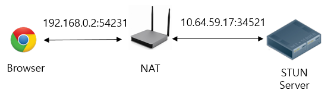
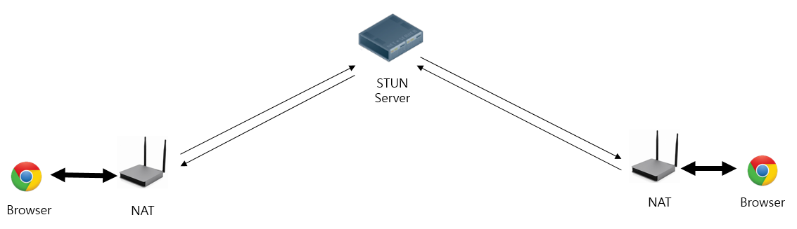
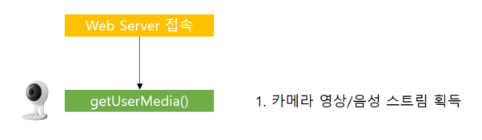
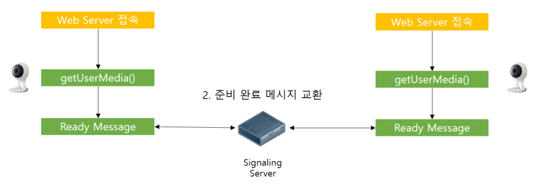
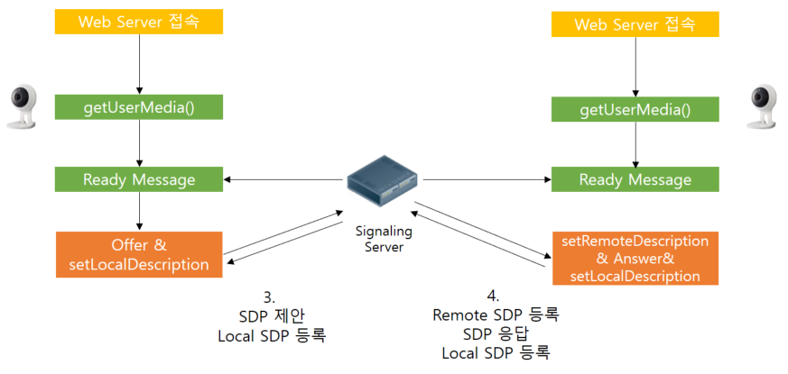
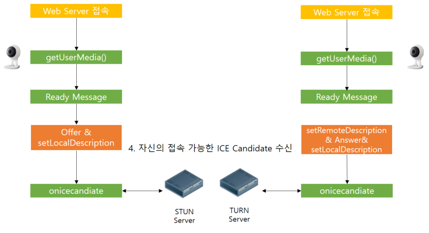
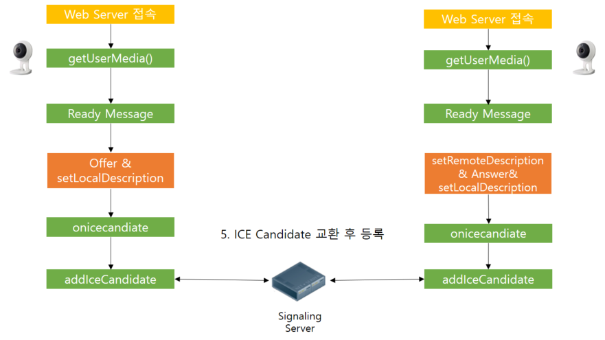
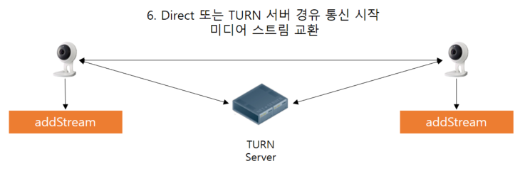
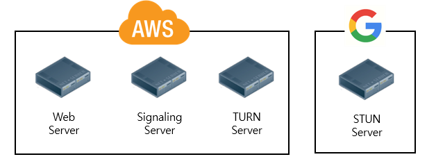

Web RTC
Web RTC란?
Web Real Time Communication
Web Browser간 P2P 통신이 가능하게 해주는 기술
2013년 Google이 W3C에 처음 제안
Web RTC로 가능한 모든것
Live 미디어 서비스
VOD 미디어 서비스
실시간 채팅
파일전송
Web RTC 특징
Web RTC 장점
별도의 플러그인 없이 미디어 통신 가능
ActiveX / NPAPI / PPAPI 미사용
1. 보안 이슈 X
2. 플러그인 유지 보수 X
Web RTC 단점 1
별도의 서버 운영 필요
1. Signaling 서버 (필요)
2. STUN / TURN 서버 (선택)
3. Media 서버 (선택)
Web RTC 단점 2
브라우저 호환성
1. IE8,9,10 미지원
2. Safari 9, 10버전 미지원
3. Edge의 경우 WebRTC와 호환되는 ORTC지원
Web RTC 시스템 구성도
Web RTC 구성 요소 1
서버
Signaling 서버
브라우저간 미디어 통신에 필요한 메타데이터를 주고 받게 해주는 서버
Web RTC 에는 구체적인 스펙 존재(X)
통신방법은 자유, 양 방향 간에 데이터만 교환이 가능하면 된다.
STUN 서버
Simple Traversal of Utilities for NAT
클라이언트의 NAT/방화벽 유무
클라이언트의 NAT 종류
클라이언트에 접근 가능한 외부 Public IP/Port 탐색
TURN 서버
Traversal Using Relays around NAT
Peer 간 직접 통신이 실패 할 경우 데이터 Relay 수행
Web RTC 구성 요소 2
클라이언트
브라우저 WebRTC API
getUserMedia()
RTCPeerConnection
RTCDataChannel
navigator.getUserMedia()
브라우저를 사용중인 단말기의 카메라, 오디오 스트림을 받아온다.
HTTPS 에서만 동작 가능
RTCPeerConnection
Remote Peer와 통신 연결을 담당하는 객체
비디오/오디오 스트림에 대한 SDP 생성 및 등록
통신 가능한 ICE Candiate를 교환
RTCDataChannel
Peer간 양방향 데이터를 교환하게 해주는 객체
Web RTC 상세 흐름도
STEP 1
영상 스트림 획득
STEP 2
통신 준비 완료
STEP 3
SDP교환
STEP 4
ICE Candidate 수신
STEP 5
ICE Candidate 교환
STEP 6
접속
Web RTC 환경 구축
Web Server & Web Client
nginx & demo page
AWS EC2 인스턴스에서 구동
https://ec2-13-125-27-27.ap-northeast-2.compute.amazonaws.com
Signal 서버
Socket.IO/WebSocket 를 이용한 직접 개발
AWS EC2 인스턴스에서 구동
STUN 서버
Google의 Public STUN 서버 사용
(중국에서 사용불가)
stun.l.google.com:19302
stun1.l.google.com:19302
TURN 서버
오픈 소스 TURN 서버 coturn
AWS EC2 인스턴스에서 구동
turn:ec2-13-125-27-27.ap-northeast-2.compute.amazonaws.com
Web RTC 서버 환경 구성도
Web RTC 데모